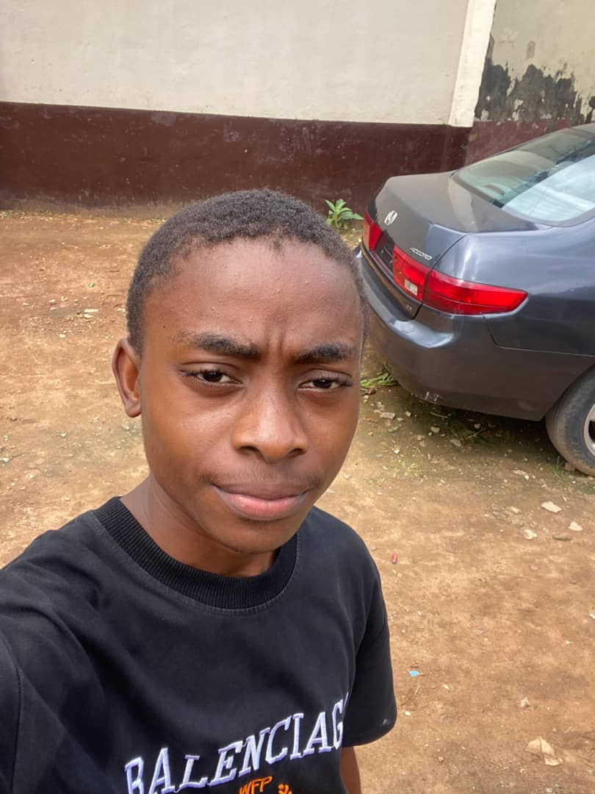

Our mission is simple: to provide thrilling, safe, and unforgettable river experiences that connect people to the wild beauty of nature while building lifelong bonds. Whether you are tackling Class IV rapids or drifting through grand canyons, we bring you home with a story.